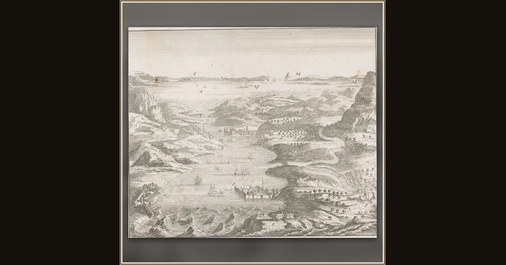

Gezicht op de Dardanellen en de zee van Marmara
anonymous (printmaker); Isaak Tirion (publisher), Amsterdam · c. 1725 - 1765 · rijksmuseum
An eighteenth-century print shows the Dardanelles and Sea of Marmara, with ships on the water; Herodotus describes Xerxes viewing the Hellespont covered with ships from Abydos (7.45.1) Explore its place in Herodotus's Histories, Book VII, chapter 144.